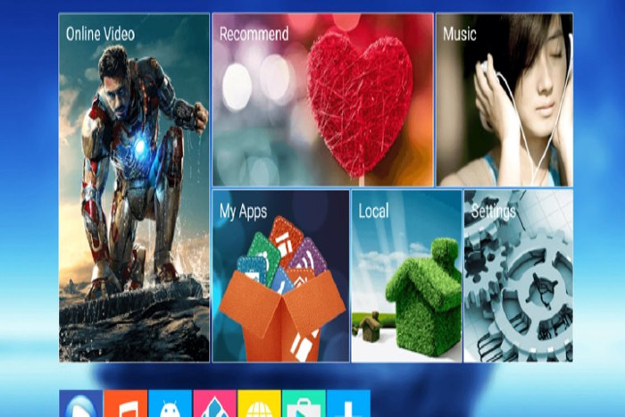

confira os prováveis preços de Moto G5 no Brasil
Postado em 22 fervereiro 2017É esperado que todos os detalhes de hardware dos novos equipamentos Moto G5 já sejam mostrados no final de fevereiro, durante as conferências da Lenovo-Motorola na MWC 2017. Mas é só no dia 7 de março que a empresa vai realizar um evento para anunciar o lançamento dos novos Moto G5 no mercado brasileiro. Teremos que esperar até lá para saber os preços oficiais cobrados no Brasil? É bem provável, mas o TecMundo recebeu uma informação exclusiva com os prováveis preços de Moto G5 e G5 Plus no Brasil. De acordo com uma fonte do site, a lista com os preços já foi recebida por representantes de uma operadora no Espirito Santo, sendo que eles devem seguir algo similar à atual geração.
Postado por Gabriel MaurilioKodi Box, o box pirata que está tirando o sono das autoridades na Europa
Postado em 22 fervereiro 2017 Para qualquer pessoa que ama assistir filmes e seriados, ter um media center, se não for realidade, é um objetivo. Os gadgets voltados para esse fim, conhecidos como media boxes, oferecem todos os vídeos que você possui em apenas um lugar, com poucos cliques de distância. Acontece que existe um, chamado Kodi Box, que está sendo usado como a ferramenta definitiva da pirataria — e está tirando o sono das autoridades na Europa. Isso porque o Kodi Box, capaz de se conectar ao PC, smartphone, tablet ou TV, pode ser carregado com aplicativos de terceiros. Ou seja: um dispositivo do tamanho de um pendrive pode rodar o Popcorn Time (filmes piratas via stream) ou qualquer outro app facilmente. Como ele funciona? Basta plugar o Kodi Box para ter acesso aos conteúdos piratas que já se encontram na internet — e não estamos falando apenas de filmes e seriados, ele também roda canais pagos de TV. Vale notar que o Kodi Box não é vendido no Brasil. Outros media boxes podem ser encontrados dentro de uma faixa entre R$ 150 e R$ 300.
Postado por Gabriel Maurilioveja como o Facebook lê e interpreta dados para entender você
Postado em 22 fervereiro 2017Quem costuma frequentar regularmente o Facebook, mas sempre fica com um pé atrás com que tipo de dados o site coleta com base em suas atividades, pode ficar tranquilo: uma nova extensão para o Chrome permite que você tenha uma ideia de como a plataforma criada por Mark Zuckerberg “adivinha” os seus gostos e modela a sua timeline – e os anúncios – de acordo com essas informações. Chamado de Data Selfie, o plugin para o navegador da Google mostra, na verdade, que ficar tranquilo é uma tarefa bastante difícil para qualquer internauta que tenha ciência de como é fácil para as redes sociais lerem seus consumidores. Uma vez instalado, o addon passa a monitorar toda a sua navegação pelo portal, simulando de uma forma mais simples – mas não menos assustadora – o que o Facebook faz com a sua vida diariamente. Embora a extensão utilize ferramentas externas e soluções de terceiros para mastigar todos os dados antes de entregá-los a você, a turma do Data Selfie garante que todas essas informações sobre o seu comportamento facebookiano é armazenado apenas localmente, no seu próprio computador. Segundo eles, isso é feito para evitar que pessoas mal-intencionadas ou outras empresas saibam tudo e mais um pouco sobre os seus hábitos online. Ainda assim, não deixa de ser preocupante o quanto determinados sites conhecem você meramente pelo uso contínuo dos seus serviços, criando um perfil progressivamente mais detalhado e certeiro a cada dia extra e que você navega por eles. Não chega a ser um segredo o fato de os dados de usuários serem a principal moeda do Facebook na hora de vender espaços e público para seus anunciantes, mas conhecer mais de perto o que isso significa é um baque até mesmo para quem não andava muito preocupado com sua privacidade, não é?
Postado por Gabriel Maurilio